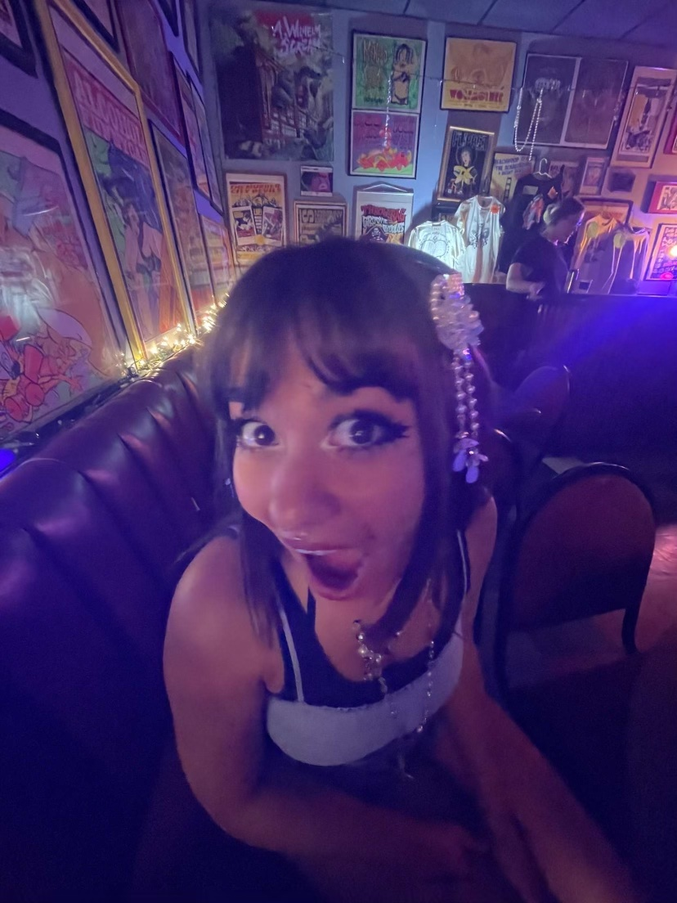

🧚🏻 Lab 3 - File Structure and File Transfer 🧚🏻
My name is Maya
I also go by Mayari. I'm excited for this project. I feel like I've gotten much better at using VSCode to edit my HTML to create the subject of my website. I still have much to learn about CSS though. I'm excited to tweak smaller details and create a better feel of completion on a site, as well as learn how to attach videos and personalize a website.
 //Credit to W3Schools for the Figure and Figcaption Coding//Subject
In this lab we learned how to edit further details in HTML. I also learned how to change the pixel size of my images in CSS, and also how to better avoid issues when attaching images. We practiced using "class" tags to create boxes around our paragraphs of text. I also learned how to create unordered lists that can also be hyperlinks to other files in our ART101 Folder.
Problems
For me I have had many problems in the past fetching the correct image to use in my website. I had the same exact problem again in this lab when I tried using my image "me.jpg". Whenever I tried attaching my image a little icon would pop up and my "alt=me"" text would show but nothing else. After talking with my partner Ruby I rewrote my code, but it was still coming up as an icon instead of my actual image. I decide to look back in my notes when I had this problem before and my notes said to use "..img/imagename.jpg" I changed my code but unfortunately it was still coming up as a small icon. I decided to ask my TA and she told me I need a "/" after ".." and before img. I put in my forward slash and my image finally worked! It was way too large of a file since I took it on my phone so I changed the size in CSS.
Reflection
We were dedicated to the end product and worked on this lab inside and outside of section. This lab helped us further understand and engrave what we had already learned before but in a more meaningful way. I feel like what I've learned I can actually apply to the labs in a way that matters versus before in Lab 2 I would just do what it told me. I enjoyed this lab!
Results
We were able to drastically change the layout and look of our website through the use of HTML and slight use of CSS. We were able to achive every task on the lab.